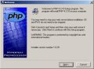
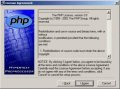
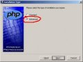
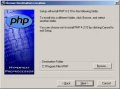
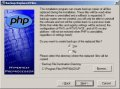
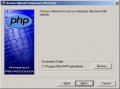
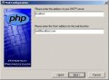
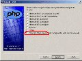
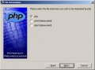
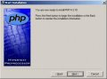

Welcome to Xerver Help Online!
I can't run my PHP scripts. Why?
To run PHP-scripts, you need PHP to be installed on your computer.
If you don't have PHP installed, download PHP from:
http://www.php.net/downloads.php
Just download and install it as any other software you have
downloaded and installed on your computer.
Download the PHP <version name> installer under the title Windows Binaries.
The installation is really easy.
Follow these simple instructions to install PHP:
- Press next
 - Press next
 - Choose advanced
 - Press next
 - Press next
 - Press next
 - Press next
- Press next
 - Press next

- Choose none
 - Press next
 - Press next
 - PHP is now installed on your computer!
- Important: PHP 4 and PHP 5 uses different
executables to execute your PHP scripts if you are a Windows user.
PHP 4 uses php.exe while PHP 5 uses php-cgi.exe. To avoid any confusion,
Step 5 in Xerver Setup contains easy-to-follow instructions regarding
how you can choose if you want to use php.exe or php-cgi.exe in order to run your
scripts.
Go to Xerver Web Setup by first starting Xerver and then go to:
http://127.0.0.1:32123/ - All done! You can now run your PHP-scripts
Important: It's always wise to try out a new webserver with a Hello World-script to ensure that you have everything configured correctly. Of course, you need to install PHP before you try to run the Hello World script.
If the Hello World script still does not work, make sure that you have your PHP-directory (by default c:\PHP\) in your PATH environment variable. There are instructions for how this can be done.